Final Embodiment
2025 Delft station studio project
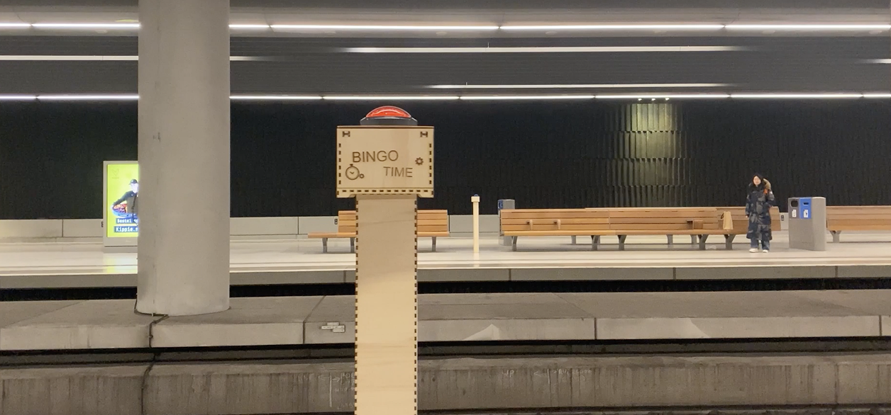
Start Point
To facilitate cross-track micro-sociality for waiting passengers at Delft Station through co-created, playful experiences.
Passengers waiting at Delft Station were isolated by their phones and headphones, turning waiting time into a disconnected and passive experience.
BingoTime turned that idle waiting into playful micro-social interaction between strangers.
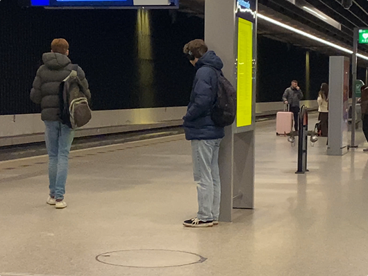
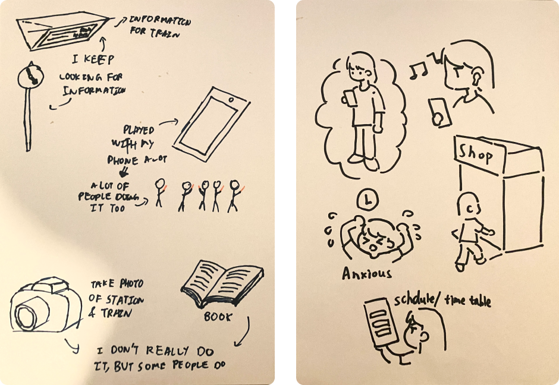
(What Passengers thought about Delft Station)
| Element | Observation (The "Vacuum") | Requirement (The Design Goal) |
|---|---|---|
| Situation | Waiting: High time-anxiety & digital focus. | Low-threshold: Quick-entry, zero-pressure play. |
| Interactions | Zero: "Sensory Bubbling" (phones/music). | Synchronicity: Break bubbles through shared focus. |
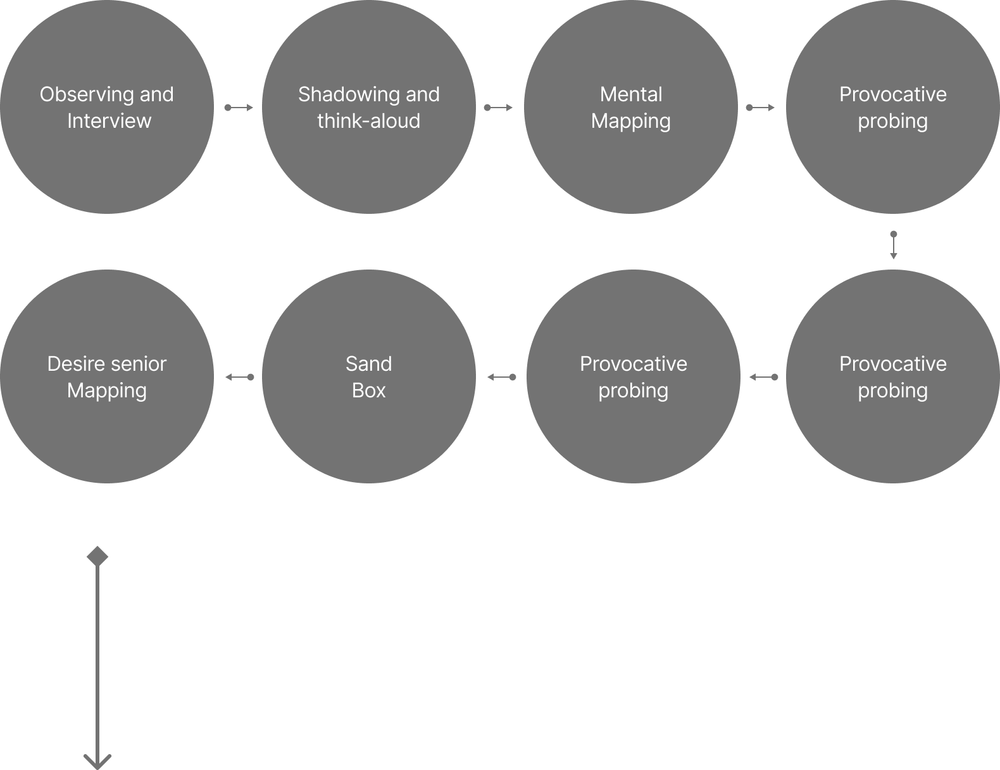
The Cross-platform
Interaction Solution
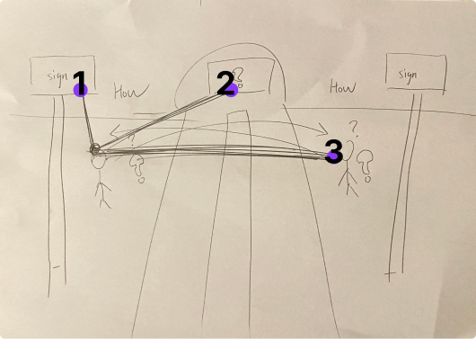
Research showed that passengers wanted stimulation, but not direct social contact.The sandbox experiment revealed that distance across platforms created a safe social buffer, enabling connection through eye contact and synchronized actions.This led to a cross-platform interaction based on visual synchronization, designed to remain lightweight and non-intrusive to train awareness.
Idea testing
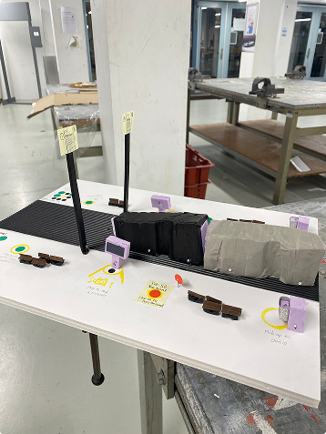
Scaled-down model ideation for cross-platform scenarios
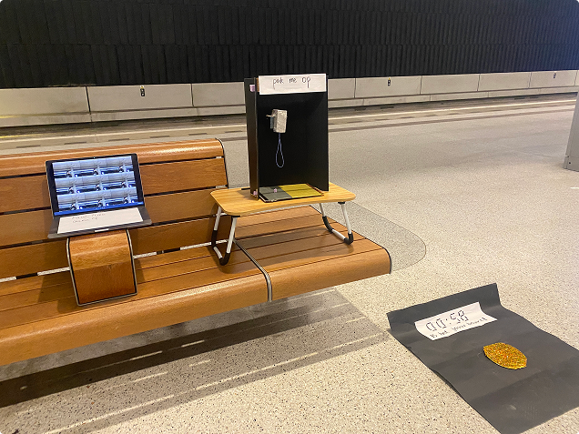
Low-fidelity prototyping testing at Delft station
Meanwhile, I selected three distinctive low-fidelity mechanisms for field testing:
The Bomb Game: Visually striking and with simple rules, it quickly captured the attention of many passersby.
Cross-platform Phone: Attempts to establish a direct voice connection.
Facing Time: Focuses on non-verbal action imitation.
Experiments showed that video and voice calls were less appealing. Participants reported that phone interactions created a certain "social burden," easily leading to the pressure of feeling trapped in small talk. Facing Time, on the other hand, lacked novelty for people.
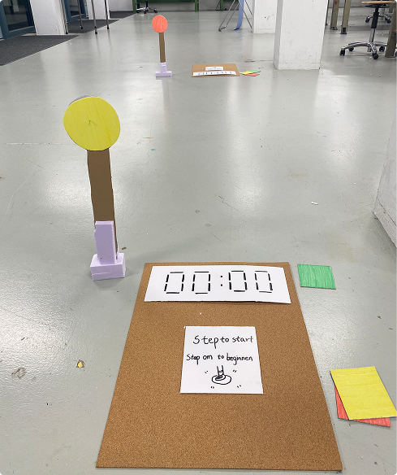
The initial 'Bomb Game' prototype demonstrated higher engagement compared to voice-based interactions, confirming that competitive gamification effectively lowers the social threshold. However, mid-fidelity field testing revealed two critical usability flaws:
The game logic allowed participants to bypass direct competition, diminishing the intended social tension.
Interaction and Experience
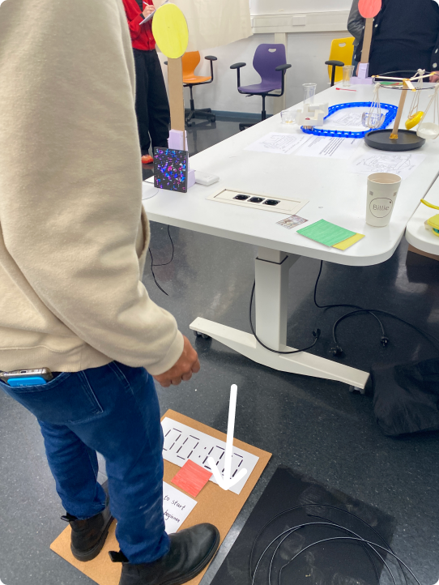
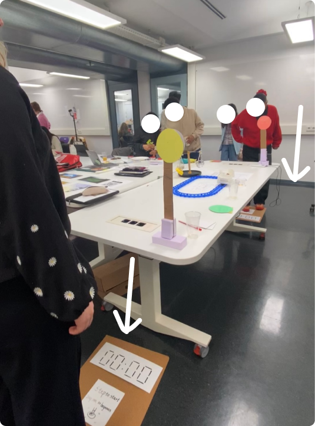
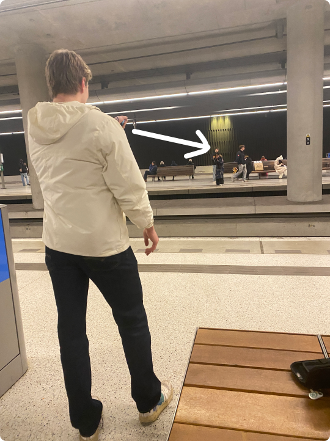
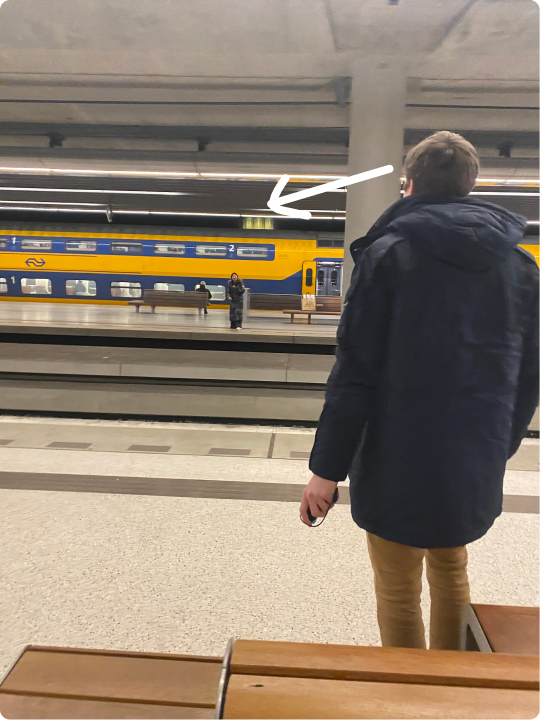
Mid-fidelity testing of the
Bomb Game
Mid-fidelity testing of the
reaction-based game
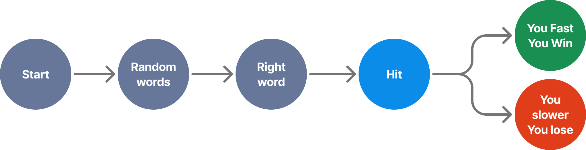
Distractor word
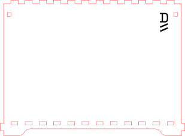
Delft LOGO (side of the box)
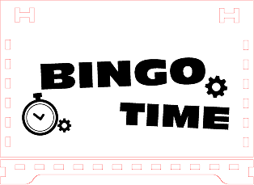
LOGO Design
AB testing
Color test
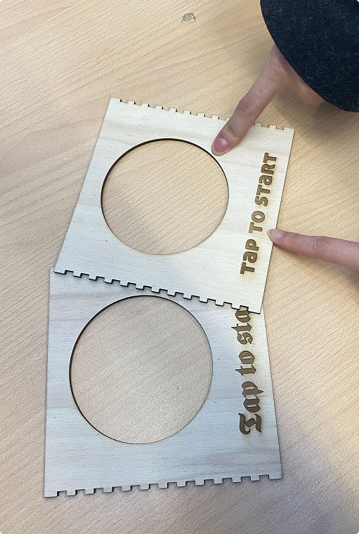
Font test
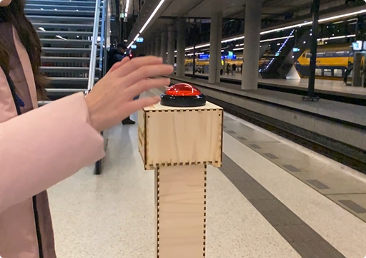
Height test
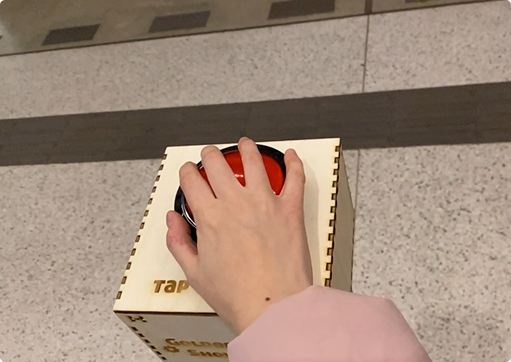
Height test
Materials & Tech -hardware and software
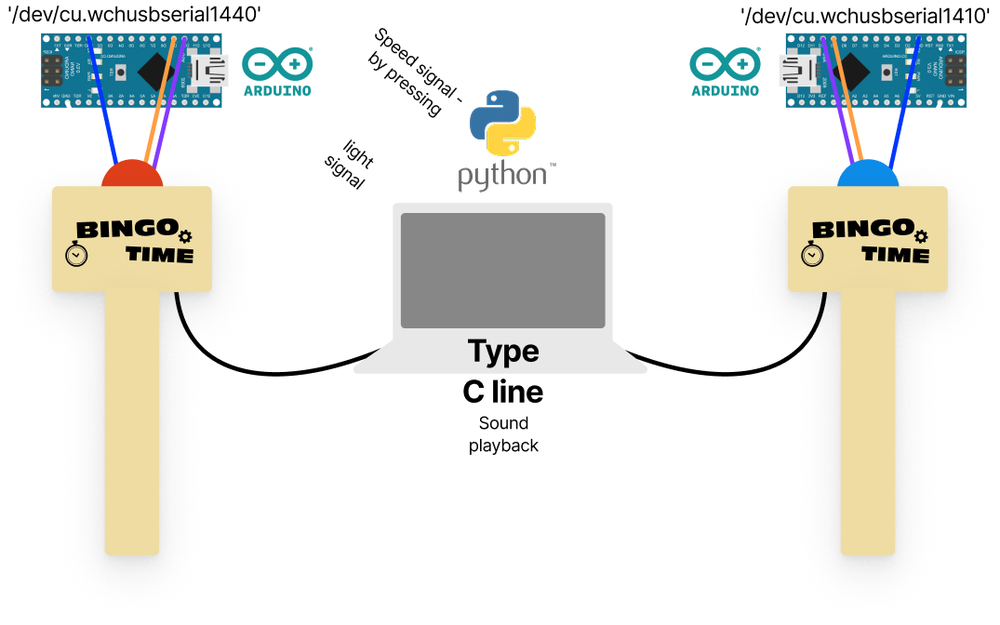
Field Evaluation
Controlled Social Simulation(Campus/Library)
Sample: 17 participants (university students/faculty members), gender ratio balanced, aged 20-30 years.
Method: Quantitative questionnaire after use.
Purpose: To verify the system's usability, hardware stability, and interaction logic. Participants rated the game experience, ease of use, and willingness to replay.
Real-Scene Testing (Delft Train Station - Wizard of Oz Method)
Sample: 5 real commuters, gender ratio balanced, aged 20-30 years.
Method: Qualitative natural observation during the "Wizard of Oz" (WoZ) experiment.
Purpose: To measure the device's ability to create micro-interactions in a real-world context by observing nonverbal communication, particularly the duration of eye contact and the behavior of shifting gaze to the opposite platform.
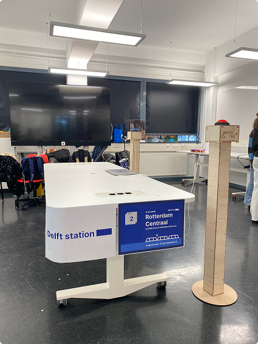
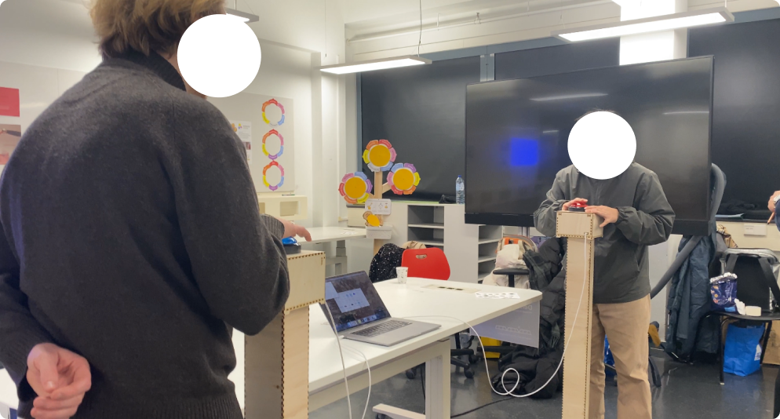
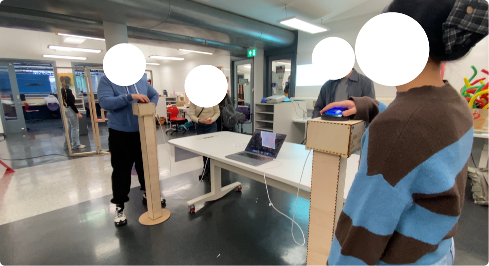
Final Test - TU Delft campus
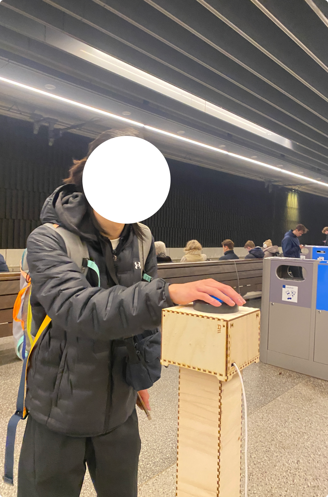
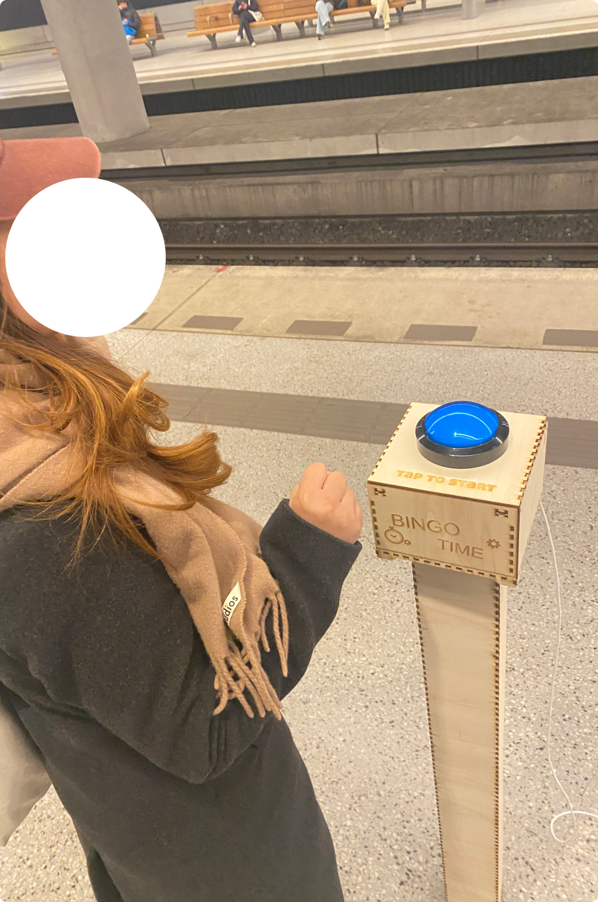
Final Test - Delft station
Field Evaluation -questionnaire
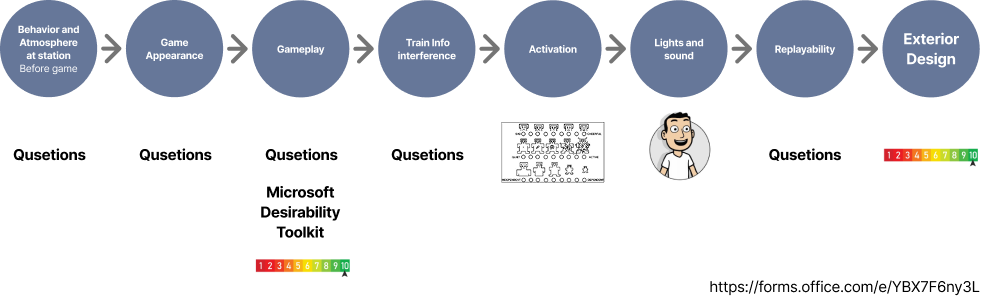
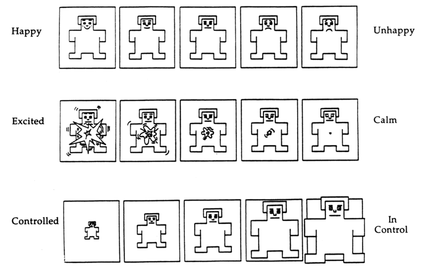
This method, in addition to measuring a single level of liking, can simulate user emotions from two (or more) orthogonal dimensions:
Valence/Pleasure: Most users chose 3, indicating that this interaction evoked a positive emotional response.
Arousal: Most users chose 2 and 6, indicating that they experienced highly excited emotions rather than a calm sense of satisfaction.
This demonstrates that BingoTime creates a state of excitement with a competitive element. The combination of "high arousal + positive valence" creates gamified social interaction, making users not only find the interaction fun but also feel "energized" both physiologically and psychologically.
PrEmo
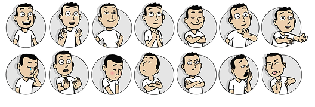
User looked at the person opposite
Sound feedback

Speed and competition

lights feedback

Game finished

WIN!

Lost..
Questionnaire Data
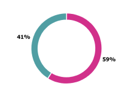
59% of users glanced at another player occasionally;
41% had eye contact or a shared interaction, 0% of users didn't look at them at all.
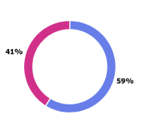
59%
of users Definitely will play again,
41% might play again, 0% will avoid to play.
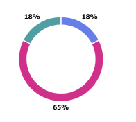
65%
of user wants to play 2-3 rounds at one time.
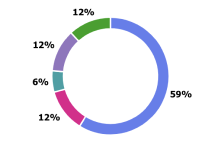
59%
Browsing on their smartphone before the game.
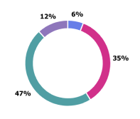
47%
Thinks 8 distracting words are too many.
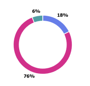
76%
of users felt that waiting time passed faster than usual.
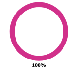
100%
of user felt it did not affect their travel.
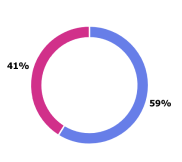
59%
of users Definitely will play again,
41% might play again, 0% will avoid to play.
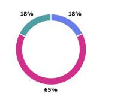
65%
of user wants to play 2-3 rounds at one time.
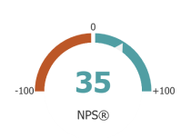
Score 35
Rule complexity (NPS) value definition: 35, in the NPS standard, a score >0 is excellent, and a score >30 means "Great".
Playful & Competitive
Words that best describe their experience
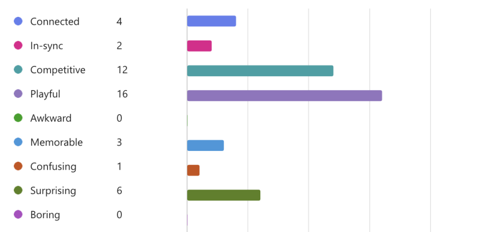